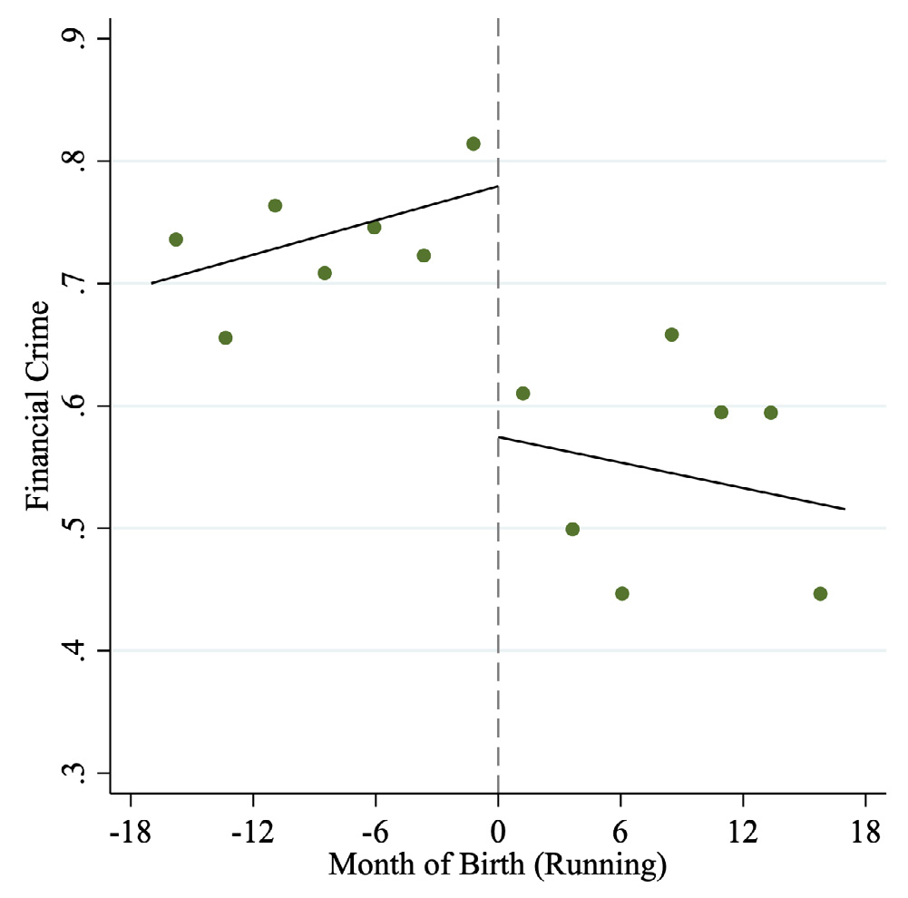
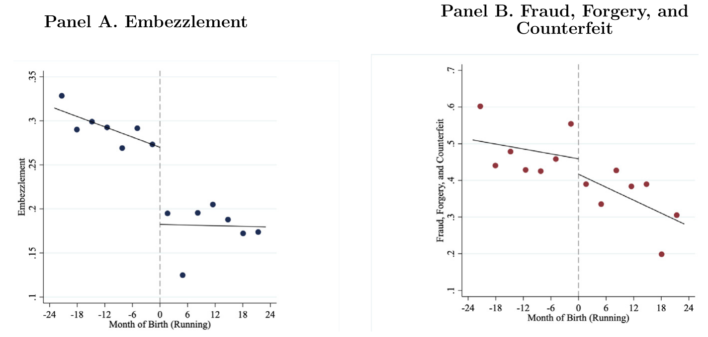
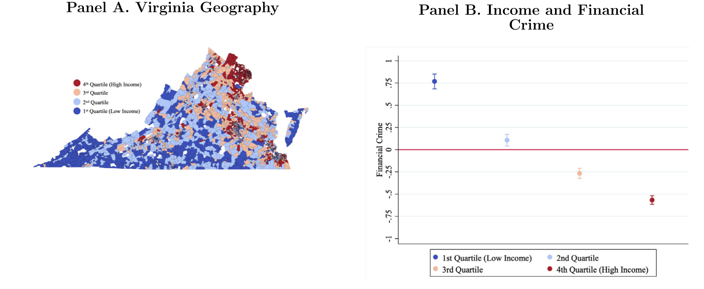
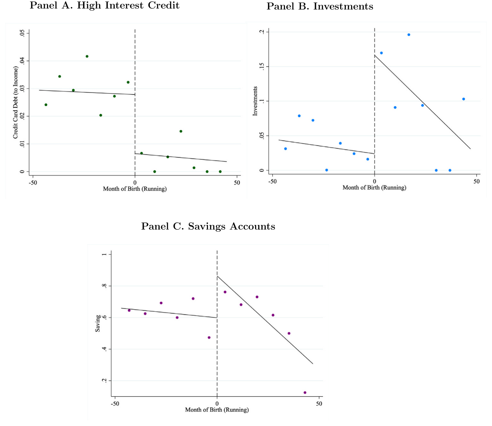
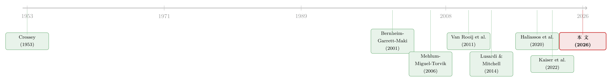

一门高中理财课，能让金融犯罪少三成？
本文读的是 Freed & Hackney (2026, Journal of Financial Economics)：作者利用美国弗吉尼亚州一项「按出生日期强制部分高中生上理财课」的政策，构造了一个断点回归 (regression discontinuity, RDD)。结论很硬——上过这门课的人，日后犯下金融犯罪的概率下降约 37%，而且几乎全部由「挪用公款（embezzlement）」一项贡献，并集中在低收入人群。机制不是「更守法」，而是「家庭资产负债表被修好了」。
1 一个反常识的问题
我们先来看一组让人不太舒服的数字。
在美国，金融犯罪每年造成的总损失超过 $300 billion（FBI, 2022）；有研究估计，金融犯罪让企业损失约 5% 的年收入，并与多达 30% 的小企业倒闭有关（Black and Fennelly, 2020; ACFE, 2022）；与此同时，有 15% 的美国家庭报告自己曾是金融诈骗的受害者（Gallup, 2023）。
这些数字背后藏着一个常被忽略的事实：金融犯罪并不主要是麦道夫（Madoff）或 FTX 那样高智商、上头条的大案。绝大多数金融犯罪是普通人干的——从挪用公款，到偷刷别人的信用卡。美国司法部给「白领犯罪」下的定义里有三个关键词：非暴力、滥用信任、为了钱（USDOJ, 1989）。
请注意最后这个词——「为了钱」。
如果一类犯罪的根本动机是金钱，那么一个自然的、甚至有点天真的问题就冒出来了：能不能用「理财教育」来减少它？ 直觉上，一个人如果更懂得管钱、更会存钱、债务负担更轻，他被逼到去挪用公司账上那笔钱的概率，是不是就会下降？
这正是 Freed 和 Hackney 这篇文章要回答的问题。听上去几乎像是政策宣传册上的口号。但真正难的，从来不是把这句话说出来，而是证明它。
2 难点：金融素养几乎不可能被「干净」地识别
为什么这个问题这么难？
因为金融素养 (financial literacy) 这个东西，跟太多看不见的个人特质纠缠在一起。会管钱的人，往往认知能力更强（Agarwal and Mazumder, 2013），人力资本更高（Lusardi and Mitchell, 2014, 2023），家境也可能更好。你拉一条「理财水平」对「犯罪率」的回归，得到一个负相关，几乎没有任何因果含义——因为同样这批人，本来就更不容易去犯罪。
换句话说，金融素养是内生的。你想测量「补上一课理财」的因果效应，却根本找不到两个除了「上没上过这门课」之外、其它都一样的人群。
这是整篇文章的命门所在。而它的全部精彩，都在于作者如何凿出一道外生的裂缝。
3 识别策略：一个生日，把人切成两半
转折点在弗吉尼亚州的一纸文件。
2009 年，弗吉尼亚州教育委员会（Virginia Board of Education）通过了一项毕业要求（Code of Virginia 22.1-200.03）：从 2015 届毕业生开始，所有公立高中学生必须修一门为期一年、独立成课的金融素养课程——不是把内容塞进数学课里，而是单独开一门。这项要求的导火索是全球金融危机后人们对国民理财水平的担忧。
关键在于「2015 届」是怎么界定的：生日在 1996 年 9 月 30 日之后的学生，被划进 2015 届，必须上这门课；生日在这之前的，则不需要。
于是，断点回归的所有要件齐了：
- 驱动变量（running variable）：个人出生日期到 1996 年 9 月 30 日这条「门槛」的距离；
- 处理（treatment）：生日在门槛右侧 → 强制上理财课；
- 对照（control）：生日在门槛左侧 → 不上；
- 可比性：一个 9 月 28 日出生和一个 10 月 2 日出生的孩子，除了被分进不同年级、因而面对不同的课程要求之外，几乎没有任何系统性差异。
这里有一个特别干净的地方，值得停下来说一句：当这项政策在 2009 年被提出时，这些孩子早就已经被分好年级了。也就是说，没有人能为了「上」或「躲」这门课而去操纵自己的出生日期——选择性进入（selection into treatment）在这个设定里几乎不可能发生。这正是断点回归最怕、也是本文最稳的一环。
形式上，作者估计的是一个标准的局部线性断点回归：
$$ Y_i = \alpha + \tau\, D_i + \beta_1 R_i + \beta_2\, (D_i \cdot R_i) + \gamma X_i + \theta_{FE} + \varepsilon_i, \qquad D_i = \mathbf{1}\{R_i \ge 0\} $$
其中 \(Y_i\) 是个人 \(i\) 是否被指控金融犯罪的示性变量，\(R_i\) 是出生日期相对门槛的距离，\(D_i\) 标记是否落在门槛右侧（受处理），\(\tau\) 就是我们要的那个因果效应——门槛两侧结果变量的跳跃。\(X_i\) 是种族、性别、家庭规模等个体特征，\(\theta_{FE}\) 是一组高维固定效应。标准误在出生日期层面聚类。最优带宽用 Imbens 和 Kalyanaraman (2012) 的方法选出，约为门槛两侧各 16 个月。
直觉上，断点回归做的事就一句话：在门槛附近，把「右边的人」减去「左边的人」。既然两边的人除了处理之外都可比，这个差就是处理的效果。
4 主要结果：下降三成，而且只是一项
先看那张最重要的图。如图 3 所示，在 1996 年 9 月 30 日这条线上，金融犯罪的概率出现了一个肉眼可见的、向下的跳跃——门槛右侧（上过课）的人，犯金融犯罪明显更少。

Figure 3: Discontinuity in Financial Crimes
落到数字上：理财教育使得犯下金融犯罪的概率下降 32%–37%（相对于均值），而且这个效应至少持续了六年。考虑到样本中金融犯罪的基准概率本就只有 0.708%，这是一个相当大的相对下降。
为什么强调「相对于均值」？因为金融犯罪是小概率事件。绝对下降零点几个百分点，听上去微不足道；但放在 0.708% 的底子上，三成多的相对降幅意味着整整一类潜在罪犯被「劝退」了。
接着，一个自然的问题是：这个下降是怎么来的？是所有金融犯罪一起降，还是某一类在降？
这一步是全文从「有趣」走向「可信」的关键。犯罪学文献早就指出，不同金融犯罪的动机天差地别。邮件或电信诈骗（mail/wire fraud）往往是大规模、精心设计、为「贪」而非为「需」（Weisburd et al., 1991）；而挪用公款（embezzlement）则恰恰相反——它通常源于一个无法对外人言说的财务困境（a non-shareable financial problem，Cressey, 1953; Williams, 2006），多发生在资产少、财务不稳定的人身上。
作者把金融犯罪拆开来逐类做断点回归，结果非常干净：理财教育只显著压低了「挪用公款」，对伪造（forgery）、诈骗（fraud）、假币（counterfeit）等其它金融犯罪几乎没有影响（如图 6 所示）。

Figure 6: Discontinuities in Types of Financial Crimes
这就把故事钉死了。如果理财课只是让人「变乖」「更守法」，那应该所有金融犯罪一起降才对。可现实是，它只压低了那一类与「财务窘迫」最相关的犯罪。于是机制呼之欲出：理财教育减少金融犯罪，靠的不是道德感化，而是缓解了财务约束。
作为一记漂亮的安慰剂检验：作者发现理财教育对暴力犯罪、毒品犯罪、故意破坏（vandalism）这些没有金钱动机的犯罪毫无影响；而对盗窃（larceny）这种有一点金钱动机、但收益小、刑罚重的犯罪，效应为负但不显著。动机里钱的成分越重，效应越明显——这条「剂量—反应」式的逻辑链，让「财务约束渠道」的解释更有说服力。
5 把机制一层层钉死
光有「只降挪用公款」还不够。但真正关键的一步在于，作者用了好几种相互独立的数据去验证「财务约束」这个渠道，而不是停在一个故事上。
第一，按收入异质性。 把人群按所在街区（block group）收入分层后，低收入社区居民受处理后金融犯罪下降 42%–48%，而高收入社区居民几乎没有变化。效应集中在事前财务约束最紧的人身上——这正是「缓解约束」假说该有的样子（如图 7 所示）。

Figure 7: Income and Financial Constraints
第二，直接从司法数据里量「财务窘迫」。 作者用「是否申请贫困辩护（indigent defense，即由公费指派律师或自行辩护）」作为财务困境的代理。结果：被指控金融犯罪的处理组个体，使用贫困辩护的概率低 19–24 个百分点，相对样本均值下降 48%–59%。也就是说，那些「即便如此还是犯了案」的被处理者，财务状况也明显比对照组更健康。
第三，直接看家庭行为。 作者把方法搬到美国人口普查局的 SIPP（Survey of Income and Program Participation）微观数据上，去看理财教育到底改变了什么。效应称得上「戏剧性」：被处理者减少对信用卡债务的依赖、增加预防性储蓄与投资；投入股市的资产份额几乎翻倍，持有储蓄账户的概率上升 51%（如图 8 所示）。

Figure 8: Discontinuities in Financial Behavior
一句话：理财课真的把这些年轻人的个人资产负债表修好了。账修好了，被「无法言说的财务困境」逼到去挪用公款的人，自然就少了。（关于「家庭如何在行为层面真实地管理自己的钱」，可参见《钱的温度：当「一块钱永远等于一块钱」不再成立》。）
6 把所有「另一种解释」逐个排除
到这里，一个挑剔的读者会开始数「但是」。作者的应对方式，几乎是把审稿人想得到的反驳逐条枪毙：
-
「会不会是学得更精，把犯罪藏得更好？」 那应该会去谋求更有「下手机会」的职位才对。可 SIPP 数据显示，被处理者并没有更可能进入管理岗、财会/采购等金融相关职业，也没有更可能去上大学、读研或拿专业学位。同时，用金融机构上报的可疑活动报告（Suspicious Activity Reports, SAR）和州警方 DART 的案件数据看，接受过理财教育的本地居民比例越高，疑似挪用公款的案件数反而越少——不是「犯了但没被抓」，而是真的少了。
-
「会不会是搬走了，所以我们没观测到他的犯罪？」 SIPP 数据里，处理组和对照组在跨州迁移上没有显著差异。
-
「会不会只是更不容易成为受害者？」 但下降集中在挪用公款——这是针对已有企业而非同侪的犯罪；而且被处理者并没有更可能去自己开公司。被害人渠道讲不通。
-
「会不会是选进了不同的学校？」 作者用家庭标识符做了同胞（siblings）对照：比较同一家庭、年龄相邻、却分属处理/对照两侧的兄弟姐妹。这一设计把家庭的经济、社会特征全部固定住。结果一致——被处理的那个孩子，犯金融犯罪的概率比自己的兄弟姐妹低约
50%。 -
「断点本身可信吗？」 McCrary (2008) 密度检验显示门槛两侧个体密度没有跳跃（没人操纵生日），各项可观测特征在门槛处也连续。更妙的是一个安慰剂式的证伪：作者发现这种跳跃只出现在 2015 届的门槛附近；在它前后那些「处理状态没有差异」的年级，门槛处什么都看不到。这一条同时排除了「整体教育水平」（如 Cole et al., 2014）和「在劳动力市场待的时间长短」这两种竞争性解释——因为那些会随年级连续变化，而不该只在 2015 这条线上跳一下。
到这一步，「财务约束渠道」基本上是站住了。
7 文献脉络
把这篇文章放回它所站的位置，要从三条河流的交汇处看起。
第一条河是金融素养研究本身。早在 Bernheim、Garrett 和 Maki (2001) 就发现，高中阶段的理财课程要求能长期提高人们的储蓄；此后 Lusardi 和 Mitchell 几乎以一己之力把这个领域做成了显学（2007, 2011, 2014, 2023），证明金融素养与储蓄、退休规划深度相关；Van Rooij、Lusardi 和 Alessie (2011) 进一步把它和股市参与连了起来。再往后，Kaiser、Lusardi、Menkhoff 和 Urban (2022) 用元分析确证了「金融教育确实能改善金融知识与下游行为」。本文与这条河的对话，是把金融素养的「下游行为」延伸到了一个从未被严肃量化过的维度——犯罪——并指出：一旦把对犯罪的溢出效应（spillover）算进去，这类教育政策的福利收益要被大幅上修。
第二条河是金融与金融犯罪。以往这条线多聚焦于银行等机构在大型复杂金融犯罪中的角色，或金融从业者的个人不当行为（如 Karpoff and Lou, 2010）。本文则把镜头对准普通人和一批长期因缺数据而被忽视的小额金融犯罪。
第三条河是犯罪经济学。从 Mehlum、Miguel 和 Torvik (2006) 到 Khanna 等 (2021)、Watson、Guettabi 和 Reimer (2020)，这条线反复发现：收入冲击会推高犯罪、个人债务与犯罪正相关。本文用一个干净的准自然实验，从「强化家庭资产负债表」这一侧给出了因果证据。而把这一切串起来的犯罪学底色，则要追溯到 Cressey (1953) 那个经典命题：挪用，源于一个无法对外言说的财务困境。

本文恰好坐在这三条河的交汇口：它既是金融素养文献里第一个把「教育干预」与「具体犯罪类型」对应起来的研究，也为犯罪经济学补上了「金融教育」这一条此前空缺的政策杠杆。
8 评论与延伸（Q&A + 研究方向）
(a) 几个可能的疑问
Q：断点回归量的是「这门课」的效应，还是「上课那一刻」之外其它随年级变化的东西？
这正是作者最在意的地方，也是他们的证伪检验最有力的一击。如果效应来自「多受了一点教育」或「在劳动力市场多待了几个月」，那它应该在每一个年级门槛上都出现、且随年级平滑变化。但作者发现跳跃只在 2015 届那条线上出现，前后年级的门槛处一片平坦。这把「整体教育」「劳动力市场时长」等连续变化的混杂因素基本排除了，剩下的差异就指向那门理财课本身。
Q：金融犯罪概率只有 0.708%，「下降 37%」是不是被小样本和稀有事件放大了？
量级确实是相对意义上的——绝对降幅是零点几个百分点。但作者的样本极大（最优带宽内
118,689人，全样本约5.5百万），稀有事件估计的精度因此有保证；而且多套独立设计（收入分层、贫困辩护、SIPP 行为、同胞对照、SAR/DART 案件数）都指向同一方向，结论不是靠某一个脆弱的小样本撑起来的。
Q：凭什么说是「缓解财务约束」，而不是「上了课更懂法、更怕被抓」？
因为效应只压低了挪用公款这一类与财务窘迫高度绑定的犯罪，对伪造、诈骗、假币几乎无影响。「更懂法、更怕抓」会让所有金融犯罪一起降，无法解释这种选择性。再加上 SIPP 里看到的真实行为变化（少借信用卡、多存钱、多投资），财务约束渠道是目前最自洽的解释。
Q：会不会是受教育者「更精明」，把犯罪藏得更好，所以只是没被起诉？
作者专门用金融机构的可疑活动报告（SAR）和州警 DART 案件数据回应了这一点——这些数据反映的是专业人士的侦查，远比一个高中生的「反侦查」能力强。结果是：本地接受过理财教育的人越多，疑似与已报的挪用案件越少。同时被处理者也没有更可能进入管理岗或财会岗。所以更可能是「真的少犯了」，而非「犯了没抓到」。
Q：弗吉尼亚一个州、一个生日门槛，外部有效性如何？
这是断点回归的通病：\(\tau\) 是门槛附近、特定人群的局部平均处理效应（LATE）。它告诉你的是「1996 年 9 月底前后出生、被这门课影响的弗吉尼亚年轻人」的效应，未必能直接外推到中年人、其它州或不同课程设计。作者也坦承这一点，文章的卖点是内部有效性极强，而非普适。
Q：这对「该不该强制开理财课」的政策争论意味着什么？
意味着以往对这类政策的成本—收益评估可能系统性低估了收益：如果连「减少金融犯罪」这一条溢出效应都算进去，作者认为收益已远超实施成本。这给「金融教育到底值不值得做」这场长期争论添了一个此前没人摆上桌的砝码。
(b) 几个可能的研究问题与提案
1. 金融素养与「债券/信用市场」上的个人违约行为
- 【经济故事】本文的机制是「修好资产负债表 → 少犯挪用」。一个自然的延伸：被处理者在信用市场上的违约、拖欠、破产概率是否也下降？如果「无法言说的财务困境」是连接点，那它应同时降低犯罪与违约，二者是同一枚硬币的两面。
- 【可行性】中。需要把同样的出生日期断点匹配到征信数据（如信用局面板或 SIPP 的债务模块）。识别策略现成可复用，难点在数据链接与隐私授权。
2. 外资持有人结构与企业内部金融犯罪
- 【经济故事】本文讲的是个人层面的挪用。把视角抬到公司：当一家企业的外资机构持有人占比更高、监督更强（delegated monitoring）时，员工挪用、内部舞弊是否更少？外资的「距离」究竟是削弱了监督，还是带来了更严的合规标准？
- 【可行性】中。可用机构持股数据（如 13F、FactSet）匹配企业舞弊/SAR 事件。识别是难点——需要找到外资持股的外生变动（如指数纳入、被动资金冲击）。与公司金融的既有识别工具能接得上。
3. 理财教育的「同侪溢出」与社区层面流动性
- 【经济故事】Haliassos 等 (2020) 提出金融素养有外部性。如果一个社区里受过理财教育的年轻人越多，是否会通过家庭、邻里网络外溢，连带降低未受处理者的金融犯罪？本文已用「本地受教育比例 vs 案件数」碰到了这个边，但没把同侪溢出单独识别出来。
- 【可行性】中偏低。需要社区层面随时间变化的处理强度，并把直接效应与溢出效应分开——这要求很强的网络/地理数据与空间识别设计，doable 但不轻松。
4. 不同「课程内容」的异质效应
- 【经济故事】本文的课覆盖储蓄、债务管理、股市、税务等一揽子主题。哪一块才是真正压低挪用的「有效成分」？是「债务管理」还是「预防性储蓄」？拆开内容能为如何设计理财课提供直接指引。
- 【可行性】低。本设定里课程内容是全州统一、同质的，没有内部变异可供识别。需要找到课程大纲跨地区有差异、但分配又外生的另一个场景。
9 我的判断
这篇文章最让我欣赏的，是它克制而完整的识别。一个生日门槛 + 一项全州统一的课程要求，本身就是教科书级的干净设定；而作者没有止步于「跑出一个负系数」，而是把「财务约束渠道」当作一个可证伪的假说，用收入异质性、贫困辩护、SIPP 行为、SAR/DART 案件数、同胞对照五路证据反复夹逼，又用「只在 2015 届门槛跳一下」的安慰剂检验把竞争性解释逐一拍掉。读下来，你很难找到一个还没被作者先想到的反驳。
要说担忧，主要有两条。其一是外部有效性：断点回归给的是门槛附近的 LATE，把「弗吉尼亚 1996 年 9 月底出生、被这门课影响的年轻人」的效应，外推到别的州、别的年龄、别的课程设计，需要格外小心；37% 这个数字不该被当成「任何地方开理财课都能减三成金融犯罪」来读。其二是结果变量是「被指控」而非「实施」：尽管作者用 SAR/DART 努力堵住了「藏得更好」这个口子，但司法系统的指控本身可能带有选择性，理想情况下我希望看到与执法强度、起诉门槛交互的进一步检验。
后续我最想看到的，是把这条「修好资产负债表 → 少犯财务型犯罪」的逻辑搬到信用市场去：同一批被处理者，在违约、拖欠、个人破产上的轨迹是否同步改善？如果是，那这篇文章揭示的就不只是「理财课减少犯罪」，而是一个更普遍的命题——金融素养是个人财务韧性的底层基础设施，而犯罪，只是它崩塌时最刺眼的那道裂缝。
参考文献
- Bernheim, D., Garrett, D., Maki, D. (2001). Education and saving: The long-term effects of high school financial curriculum mandates. Journal of Public Economics 80(3), 435–465.
- Bernheim, D., Garrett, D. (2003). The effects of financial education in the workplace: Evidence from a survey of households. Journal of Public Economics 87(7–8), 1487–1519.
- Cressey, D. R. (1953). Other People's Money: A Study in the Social Psychology of Embezzlement. Free Press.
- Haliassos, M., Jansson, T., Karabulut, Y. (2020). Financial literacy externalities. Review of Financial Studies 33(2), 950–989.
- Imbens, G., Kalyanaraman, K. (2012). Optimal bandwidth choice for the regression discontinuity estimator. Review of Economic Studies 79(3), 933–959.
- Kaiser, T., Lusardi, A., Menkhoff, L., Urban, C. (2022). Financial education affects financial knowledge and downstream behaviors. Journal of Financial Economics 145(2), 255–272.
- Karpoff, J. M., Lou, X. (2010). Short sellers and financial misconduct. Journal of Finance 65(5), 1879–1913.
- Khanna, G., Medina, C., Nyshadham, A., Posso, C., Tamayo, J. (2021). Job loss, credit, and crime in Colombia. American Economic Review: Insights 3(1), 97–114.
- Lusardi, A., Mitchell, O. S. (2014). The economic importance of financial literacy: Theory and evidence. Journal of Economic Literature 52(1), 5–44.
- McCrary, J. (2008). Manipulation of the running variable in the regression discontinuity design: A density test. Journal of Econometrics 142(2), 698–714.
- Mehlum, H., Miguel, E., Torvik, R. (2006). Poverty and crime in 19th century Germany. Journal of Urban Economics 59(3), 370–388.
- Van Rooij, M., Lusardi, A., Alessie, R. (2011). Financial literacy and stock market participation. Journal of Financial Economics 101(2), 449–472.
- Watson, B., Guettabi, M., Reimer, M. (2020). Universal cash and crime. Review of Economics and Statistics 102(4), 678–689.
- Weisburd, D., Wheeler, S., Waring, E., Bode, N. (1991). Crimes of the Middle Classes. Yale University Press.